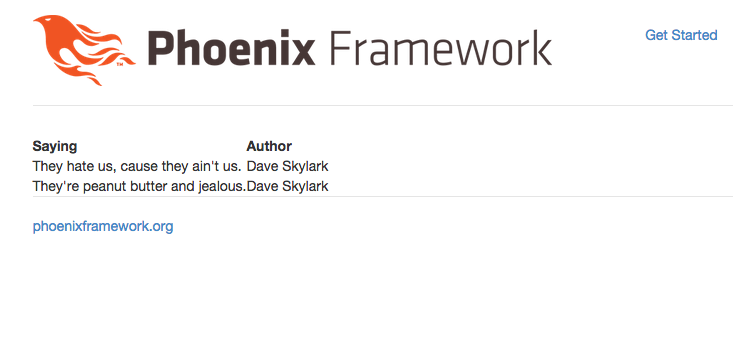

Let's build a page to list out all the quotes in our application. In this case we'll use the quote_controller and index action.
We're going to build full CRUD functionality on the quotes controller, so we can go ahead and setup the full set of RESTful (or resourceful) routes.
Edit web/router.ex and add the following line:
defmodule Splurty.Router do
use Phoenix.Router
pipeline :browser do
plug :accepts, ~w(html)
plug :fetch_session
plug :fetch_flash
plug :protect_from_forgery
end
pipeline :api do
plug :accepts, ~w(json)
end
scope "/", Splurty do
pipe_through :browser # Use the default browser stack
get "/", QuoteController, :homepage
resources "/quotes", QuoteController
end
# Other scopes may use custom stacks.
# scope "/api", Splurty do
# pipe_through :api
# end
end
Save the file.
Let's output our routes table and make sure it looks ok.
$ mix phoenix.routesRight now it should say:
quote_path GET / Splurty.QuoteController.homepage/2
quote_path GET /quotes Splurty.QuoteController.index/2
quote_path GET /quotes/:id/edit Splurty.QuoteController.edit/2
quote_path GET /quotes/new Splurty.QuoteController.new/2
quote_path GET /quotes/:id Splurty.QuoteController.show/2
quote_path POST /quotes Splurty.QuoteController.create/2
quote_path PATCH /quotes/:id Splurty.QuoteController.update/2
PUT /quotes/:id Splurty.QuoteController.update/2
quote_path DELETE /quotes/:id Splurty.QuoteController.destroy/2
Awesome, it hooked up the full set of resourceful routes. Sweet.
Restart your server.
Next up, go into the web browser to the URL that looks like: localhost:4000/quotes. It complains with the error message: undefined function: Splurty.QuoteController.index/2.
Since it's mad we don't have the index action in our controller, let's go add one. Open web/controllers/quote_controller.ex and add the following section:
defmodule Splurty.QuoteController do
use Phoenix.Controller
plug :action
def homepage(conn, _params) do
render conn, "homepage.html"
end
def index(conn, _params) do
render conn, "index.html"
end
end
Save the file and refresh the page. It should show you an error message that the template index.html hasn't been created. This makes sense.
Add a file in web/templates/quote/index.html.eex that looks like this:
YOLO!Save the file, and refresh the page. Awesome, we no longer see an error message.
We want this page to list out each of the quotes in our database, but right now our database has no quotes in it. Let's jump into iex and add a couple quotes:
$ iex -S mixAnd add two quotes, running commands like this:
> quote = %Splurty.Quote{saying: "They hate us, cause they ain't us.", author: "Dave Skylark"}
> Repo.insert(quote)
> quote2 = %Splurty.Quote{saying: "They're peanut butter and jealous.", author: "Dave Skylark"}
> Repo.insert(quote2)Then press CTRL+C twice to exit iex.
Cool, now that we have quotes in our database, let's loop through each of them and put them on an HTML table.
First thing we'll need to do is load up our quotes in our controller.
Open web/controller/quote_controller.ex and edit the index action to look like this:
defmodule Splurty.QuoteController do
use Phoenix.Controller
plug :action
def homepage(conn, _params) do
render conn, "homepage.html"
end
def index(conn, _params) do
conn
|> assign(:quotes, Repo.all(Splurty.Quote))
|> render("index.html")
end
end
This will render the index.html.eex template on the connection and pass through the assignment of @quotes being all the quotes loaded up.
Now edit web/templates/quote/index.html.eex and add the following code:
<table>
<thead>
<tr>
<th>Saying</th>
<th>Author</th>
</thead>
<%= for q <- @quotes do %>
<tr>
<td>
<%= q.saying %>
</td>
<td>
<%= q.author %>
</td>
</tr>
<% end %>
</table>
Save the file and open localhost:4000/quotes in your browser. It should look like this:
